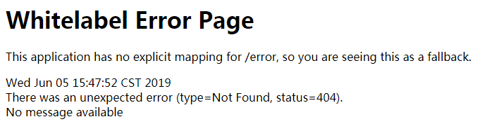
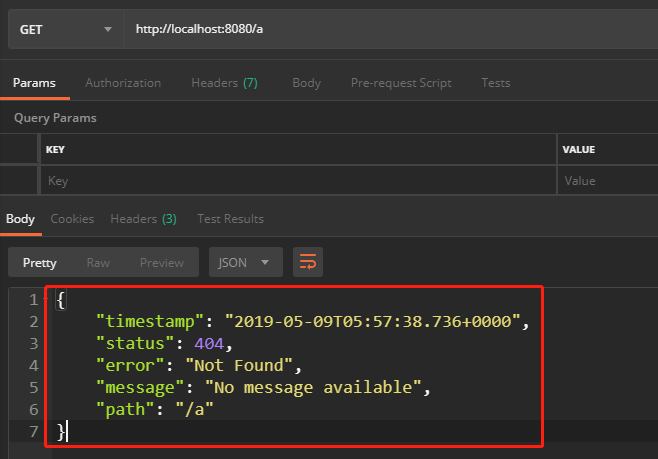
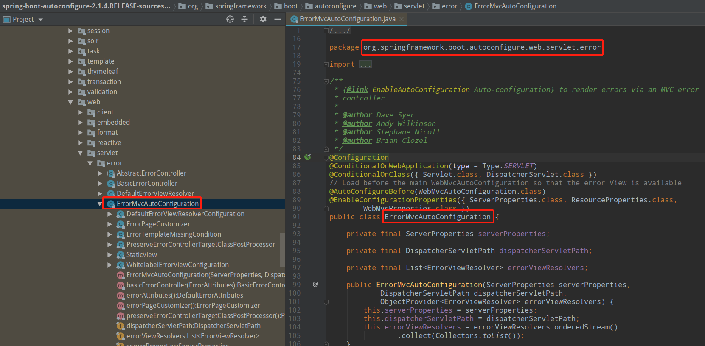
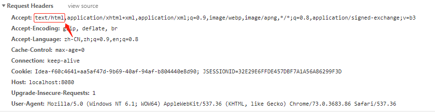
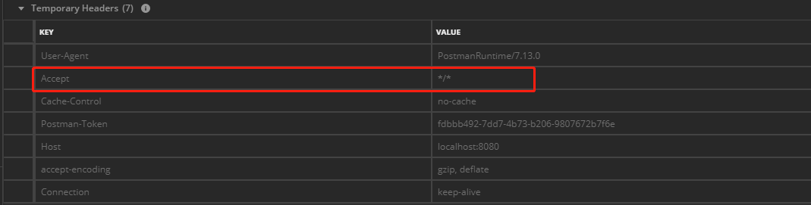
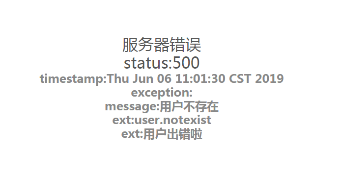
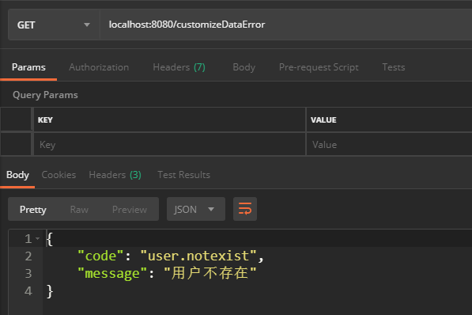

<!DOCTYPE html>
<html>
<head><meta name="generator" content="Hexo 3.8.0">
  <meta charset="utf-8">
  <meta name="baidu-site-verification" content="L6Lm9d5Crl">
  
  
  
  
  <title>SpringBoot统一异常处理 | Jason Blog 主页</title>
  <meta name="viewport" content="width=device-width, initial-scale=1, maximum-scale=1">
  <meta name="description" content="SpringBoot统一异常处理引言本文将谈论 SpringBoot 的默认错误处理机制，以及如何自定义错误响应。 版本信息 JDK：1.8 SpringBoot ：2.1.4.RELEASE maven：3.3.9 Thymelaf：2.1.4.RELEASE IDEA：2019.1.1  默认错误响应我们新建一个项目，先来看看 SpringBoot 的默认响应式什么： 首先，引入 maven">
<meta property="og:type" content="article">
<meta property="og:title" content="SpringBoot统一异常处理">
<meta property="og:url" content="http://yoursite.com/2019/06/06/SpringBoot统一异常处理/index.html">
<meta property="og:site_name" content="Jason Blog 主页">
<meta property="og:description" content="SpringBoot统一异常处理引言本文将谈论 SpringBoot 的默认错误处理机制，以及如何自定义错误响应。 版本信息 JDK：1.8 SpringBoot ：2.1.4.RELEASE maven：3.3.9 Thymelaf：2.1.4.RELEASE IDEA：2019.1.1  默认错误响应我们新建一个项目，先来看看 SpringBoot 的默认响应式什么： 首先，引入 maven">
<meta property="og:locale" content="zh-CN">
<meta property="og:image" content="http://yoursite.com/2019/06/06/SpringBoot统一异常处理/1183871-20190606114926448-1776453283.png">
<meta property="og:image" content="http://yoursite.com/2019/06/06/SpringBoot统一异常处理/1183871-20190606114935723-1836628691.png">
<meta property="og:image" content="http://yoursite.com/2019/06/06/SpringBoot统一异常处理/1183871-20190606114945951-537477000.png">
<meta property="og:image" content="http://yoursite.com/2019/06/06/SpringBoot统一异常处理/1183871-20190606115004509-546066412.png">
<meta property="og:image" content="http://yoursite.com/2019/06/06/SpringBoot统一异常处理/1183871-20190606115012055-1373011166.png">
<meta property="og:image" content="http://yoursite.com/2019/06/06/SpringBoot统一异常处理/1183871-20190606115030201-1386068704.png">
<meta property="og:image" content="http://yoursite.com/2019/06/06/SpringBoot统一异常处理/1183871-20190606115038570-301804328.png">
<meta property="og:updated_time" content="2019-06-06T08:56:52.194Z">
<meta name="twitter:card" content="summary">
<meta name="twitter:title" content="SpringBoot统一异常处理">
<meta name="twitter:description" content="SpringBoot统一异常处理引言本文将谈论 SpringBoot 的默认错误处理机制，以及如何自定义错误响应。 版本信息 JDK：1.8 SpringBoot ：2.1.4.RELEASE maven：3.3.9 Thymelaf：2.1.4.RELEASE IDEA：2019.1.1  默认错误响应我们新建一个项目，先来看看 SpringBoot 的默认响应式什么： 首先，引入 maven">
<meta name="twitter:image" content="http://yoursite.com/2019/06/06/SpringBoot统一异常处理/1183871-20190606114926448-1776453283.png">
  
    <link rel="alternative" href="/atom.xml" title="Jason Blog 主页" type="application/atom+xml">
  
  
    <link rel="icon" href="/img/favicon.png">
  
  
  <link rel="stylesheet" href="//cdn.bootcss.com/animate.css/3.5.0/animate.min.css">
  
  <link rel="stylesheet" href="/css/style.css">
  <link rel="stylesheet" href="/font-awesome/css/font-awesome.min.css">
  <link rel="apple-touch-icon" href="/apple-touch-icon.png">
  
  
      <link rel="stylesheet" href="/fancybox/jquery.fancybox.css">
  
  <!-- 加载特效 -->
    <script src="/js/pace.js"></script>
    <link href="/css/pace/pace-theme-flash.css" rel="stylesheet">
  <script>
      var yiliaConfig = {
          fancybox: true,
          animate: true,
          isHome: false,
          isPost: true,
          isArchive: false,
          isTag: false,
          isCategory: false,
          open_in_new: false
      }
  </script>
</head></html>
<body>
  <div id="container">
    <div class="left-col">
    <div class="overlay"></div>
<div class="intrude-less">
    <header id="header" class="inner">
        
<script src="https://7.url.cn/edu/jslib/comb/require-2.1.6,jquery-1.9.1.min.js"></script>

        <a href="/" class="profilepic">
            
            
            
        </a>
        <hgroup>
          <h1 class="header-author"><a href="/">Jason</a></h1>
        </hgroup>
        
        
            <form>
                <input type="text" class="st-default-search-input search" id="local-search-input" placeholder="搜索一下" autocomplete="off">
            </form>
            <div id="local-search-result"></div>
        
        
            <script type="text/javascript">
                (function() {
                    'use strict';
                    function getMatchData(keyword, data) {
                        var matchData = [];
                        for(var i =0;i<data.length;i++){
                            if(data[i].title.toLowerCase().indexOf(keyword)>=0) 
                                matchData.push(data[i])
                        }
                        return matchData;
                    }
                    var $input = $('#local-search-input');
                    var $resultContent = $('#local-search-result');
                    $input.keyup(function(){
                        $.ajax({
                            url: '/search.json',
                            dataType: "json",
                            success: function( json ) {
                                var str='<ul class=\"search-result-list\">';                
                                var keyword = $input.val().trim().toLowerCase();
                                $resultContent.innerHTML = "";
                                if ($input.val().trim().length <= 0) {
                                    $resultContent.empty();
                                    $('#switch-area').show();
                                    return;
                                }
                                var results = getMatchData(keyword, json);
                                if(results.length === 0){
                                    $resultContent.empty();
                                    $('#switch-area').show();
                                    return;
                                } 
                                for(var i =0; i<results.length; i++){
                                    str += "<li><a href='"+ results[i].url +"' class='search-result-title'>"+ results[i].title +"</a></li>";
                                }
                                str += "</ul>";
                                $resultContent.empty();
                                $resultContent.append(str);
                                $('#switch-area').hide();
                            }
                        });
                    });
                })();
            </script>
        
        
            <div id="switch-btn" class="switch-btn">
                <div class="icon">
                    <div class="icon-ctn">
                        <div class="icon-wrap icon-house" data-idx="0">
                            <div class="birdhouse"></div>
                            <div class="birdhouse_holes"></div>
                        </div>
                        <div class="icon-wrap icon-ribbon hide" data-idx="1">
                            <div class="ribbon"></div>
                        </div>
                        
                        <div class="icon-wrap icon-link hide" data-idx="2">
                            <div class="loopback_l"></div>
                            <div class="loopback_r"></div>
                        </div>
                        
                        
                        <div class="icon-wrap icon-me hide" data-idx="3">
                            <div class="user"></div>
                            <div class="shoulder"></div>
                        </div>
                        
                    </div>
                </div>
                <div class="tips-box hide">
                    <div class="tips-arrow"></div>
                    <ul class="tips-inner">
                        <li>菜单</li>
                        <li>标签</li>
                        
                        <li>友情链接</li>
                        
                        
                        <li>关于我</li>
                        
                    </ul>
                </div>
            </div>
        
        <div id="switch-area" class="switch-area">
            <div class="switch-wrap">
                <section class="switch-part switch-part1">
                    <nav class="header-menu">
                        <ul>
                        
                            <li><a href="/archives/">所有文章</a></li>
                        
                            <li><a href="/categories/开发工具/">玩转开发工具</a></li>
                        
                            <li><a href="/categories/digital">玩转数码</a></li>
                        
                            <li><a href="/categories/algorithm">算法学习</a></li>
                        
                            <li><a href="/about/">关于我</a></li>
                        
                        </ul>
                    </nav>
                    <nav class="header-nav">
                        <ul class="social">
                            
                                <a class="fl github" target="_blank" href="https://github.com/JasonWang0911/" title="github">github</a>
                            
                                <a class="fl rss" target="_blank" href="/atom.xml" title="rss">rss</a>
                            
                        </ul>
                    </nav>
                </section>
                
                <section class="switch-part switch-part2">
                    <div class="widget tagcloud" id="js-tagcloud">
                        
                    </div>
                </section>
                
                
                <section class="switch-part switch-part3">
                    <div id="js-friends">
                    
                      <a target="_blank" class="main-nav-link switch-friends-link" href="http://blog.csdn.net/baidu_21483933">csdn</a>
                    
                      <a target="_blank" class="main-nav-link switch-friends-link" href="https://segmentfault.com/blog/maocg_web">segmentfault</a>
                    
                      <a target="_blank" class="main-nav-link switch-friends-link" href="http://www.jianshu.com/users/eb37ef89c746/latest_articles">简书</a>
                    
                    </div>
                </section>
                
                
                
                <section class="switch-part switch-part4">
                
                    <div id="js-aboutme">爱动漫,爱游戏,爱编程,爱运动,爱的太多了!</div>
                </section>
                
            </div>
        </div>
    </header>
</div>

    </div>
    <div class="mid-col">
      <nav id="mobile-nav">
      <div class="overlay">
          <div class="slider-trigger"></div>
          <h1 class="header-author js-mobile-header hide"><a href="/" title="回到主页">Jason</a></h1>
      </div>
    <div class="intrude-less">
        <header id="header" class="inner">
            <a href="/" class="profilepic">
                
                    
                
            </a>
            <hgroup>
              <h1 class="header-author"><a href="/" title="回到主页">Jason</a></h1>
            </hgroup>
            
            <nav class="header-menu">
                <ul>
                
                    <li><a href="/archives/">所有文章</a></li>
                
                    <li><a href="/categories/开发工具/">玩转开发工具</a></li>
                
                    <li><a href="/categories/digital">玩转数码</a></li>
                
                    <li><a href="/categories/algorithm">算法学习</a></li>
                
                    <li><a href="/about/">关于我</a></li>
                
                <div class="clearfix"></div>
                </ul>
            </nav>
            <nav class="header-nav">
                <div class="social">
                    
                        <a class="github" target="_blank" href="https://github.com/JasonWang0911/" title="github">github</a>
                    
                        <a class="rss" target="_blank" href="/atom.xml" title="rss">rss</a>
                    
                </div>
            </nav>
        </header>
    </div>
</nav>
      <div class="body-wrap"><article id="post-SpringBoot统一异常处理" class="article article-type-post" itemscope itemprop="blogPost">
  
    <div class="article-meta">
      <a href="/2019/06/06/SpringBoot统一异常处理/" class="article-date">
      <time datetime="2019-06-06T08:06:56.000Z" itemprop="datePublished">2019-06-06</time>
</a>

    </div>
  
  <div class="article-inner">
    
      <input type="hidden" class="isFancy">
    
    
      <header class="article-header">
        
  
    <h1 class="article-title" itemprop="name">
      SpringBoot统一异常处理
    </h1>
  


      </header>
      
      <div class="article-info article-info-post">
        

        
        <div class="clearfix"></div>
      </div>
      
    
    <div class="article-entry" itemprop="articleBody">
      
          
        <h1 id="SpringBoot统一异常处理"><a href="#SpringBoot统一异常处理" class="headerlink" title="SpringBoot统一异常处理"></a>SpringBoot统一异常处理</h1><h2 id="引言"><a href="#引言" class="headerlink" title="引言"></a>引言</h2><p>本文将谈论 SpringBoot 的默认错误处理机制，以及如何自定义错误响应。</p>
<h2 id="版本信息"><a href="#版本信息" class="headerlink" title="版本信息"></a>版本信息</h2><ul>
<li>JDK：1.8</li>
<li>SpringBoot ：2.1.4.RELEASE</li>
<li>maven：3.3.9</li>
<li>Thymelaf：2.1.4.RELEASE</li>
<li>IDEA：2019.1.1</li>
</ul>
<h2 id="默认错误响应"><a href="#默认错误响应" class="headerlink" title="默认错误响应"></a>默认错误响应</h2><p>我们新建一个项目，先来看看 SpringBoot 的默认响应式什么：</p>
<p>首先，引入 maven 依赖：</p>
<figure class="highlight"><table><tr><td class="gutter"><pre><span class="line">1</span><br><span class="line">2</span><br><span class="line">3</span><br><span class="line">4</span><br><span class="line">5</span><br><span class="line">6</span><br><span class="line">7</span><br><span class="line">8</span><br></pre></td><td class="code"><pre><span class="line">&lt;dependency&gt;</span><br><span class="line">    &lt;groupId&gt;org.springframework.boot&lt;/groupId&gt;</span><br><span class="line">    &lt;artifactId&gt;spring-boot-starter-web&lt;/artifactId&gt;</span><br><span class="line">&lt;/dependency&gt;</span><br><span class="line">&lt;dependency&gt;</span><br><span class="line">    &lt;groupId&gt;org.springframework.boot&lt;/groupId&gt;</span><br><span class="line">    &lt;artifactId&gt;spring-boot-starter-thymeleaf&lt;/artifactId&gt;</span><br><span class="line">&lt;/dependency&gt;</span><br></pre></td></tr></table></figure>
<p>然后，写一个请求接口：</p>
<figure class="highlight java"><table><tr><td class="gutter"><pre><span class="line">1</span><br><span class="line">2</span><br><span class="line">3</span><br><span class="line">4</span><br><span class="line">5</span><br><span class="line">6</span><br><span class="line">7</span><br><span class="line">8</span><br><span class="line">9</span><br><span class="line">10</span><br><span class="line">11</span><br><span class="line">12</span><br><span class="line">13</span><br><span class="line">14</span><br><span class="line">15</span><br><span class="line">16</span><br><span class="line">17</span><br><span class="line">18</span><br><span class="line">19</span><br><span class="line">20</span><br><span class="line">21</span><br></pre></td><td class="code"><pre><span class="line"></span><br><span class="line"><span class="keyword">package</span> com.yanfei1819.customizeerrordemo.web.controller;</span><br><span class="line"><span class="keyword">import</span> org.springframework.stereotype.Controller;</span><br><span class="line"><span class="keyword">import</span> org.springframework.web.bind.annotation.GetMapping;</span><br><span class="line"><span class="keyword">import</span> org.springframework.web.bind.annotation.ResponseBody;</span><br><span class="line"></span><br><span class="line"><span class="comment">/**</span></span><br><span class="line"><span class="comment"> * Created by 追梦1819 on 2019-05-09.</span></span><br><span class="line"><span class="comment"> */</span></span><br><span class="line"><span class="meta">@Controller</span></span><br><span class="line"><span class="keyword">public</span> <span class="class"><span class="keyword">class</span> <span class="title">DefaultErrorController</span> </span>&#123;</span><br><span class="line">    <span class="meta">@GetMapping</span>(<span class="string">"/defaultViewError"</span>)</span><br><span class="line">    <span class="function"><span class="keyword">public</span> <span class="keyword">void</span> <span class="title">defaultViewError</span><span class="params">()</span></span>&#123;</span><br><span class="line">        System.out.println(<span class="string">"默认页面异常"</span>);</span><br><span class="line">    &#125;</span><br><span class="line">    <span class="meta">@ResponseBody</span></span><br><span class="line">    <span class="meta">@GetMapping</span>(<span class="string">"/defaultDataError"</span>)</span><br><span class="line">    <span class="function"><span class="keyword">public</span> <span class="keyword">void</span> <span class="title">defaultDataError</span><span class="params">()</span></span>&#123;</span><br><span class="line">        System.out.println(<span class="string">"默认的客户端异常"</span>);</span><br><span class="line">    &#125;</span><br><span class="line">&#125;</span><br></pre></td></tr></table></figure>
<p>随意访问一个8080端口的地址，例如 <a href="http://localhost:8080/a" target="_blank" rel="noopener">http://localhost:8080/a</a> ，如下效果：</p>
<ol>
<li><p>浏览器访问，返回一个默认页面<br></p>
</li>
<li><p>其它的客户端访问，返回确定的json字符串</p>
</li>
</ol>
<p></p>
<p>以上是SpringBoot 默认的错误响应页面和返回值。不过，在实际项目中，这种响应对用户来说并不友好。通常都是开发者自定义异常页面和返回值，使其看起来更加友好、更加舒适。</p>
<h2 id="默认的错误处理机制"><a href="#默认的错误处理机制" class="headerlink" title="默认的错误处理机制"></a>默认的错误处理机制</h2><p>  在定制错误页面和错误响应数据之前，我们先来看看 SpringBoot 的错误处理机制。</p>
<p>ErrorMvcAutoConfiguration ：</p>
<p></p>
<p>容器中有以下组件：</p>
<p>1、DefaultErrorAttributes</p>
<p>2、BasicErrorController</p>
<p>3、ErrorPageCustomizer</p>
<p>4、DefaultErrorViewResolver</p>
<p>系统出现 4xx 或者 5xx 错误时，ErrorPageCustomizer 就会生效：</p>
<figure class="highlight java"><table><tr><td class="gutter"><pre><span class="line">1</span><br><span class="line">2</span><br><span class="line">3</span><br><span class="line">4</span><br></pre></td><td class="code"><pre><span class="line"><span class="meta">@Bean</span></span><br><span class="line"><span class="function"><span class="keyword">public</span> ErrorPageCustomizer <span class="title">errorPageCustomizer</span><span class="params">()</span> </span>&#123;</span><br><span class="line">    <span class="keyword">return</span> <span class="keyword">new</span> ErrorPageCustomizer(<span class="keyword">this</span>.serverProperties, <span class="keyword">this</span>.dispatcherServletPath);</span><br><span class="line">&#125;</span><br></pre></td></tr></table></figure>
<figure class="highlight java"><table><tr><td class="gutter"><pre><span class="line">1</span><br><span class="line">2</span><br><span class="line">3</span><br><span class="line">4</span><br><span class="line">5</span><br><span class="line">6</span><br><span class="line">7</span><br><span class="line">8</span><br><span class="line">9</span><br><span class="line">10</span><br><span class="line">11</span><br><span class="line">12</span><br><span class="line">13</span><br><span class="line">14</span><br><span class="line">15</span><br><span class="line">16</span><br><span class="line">17</span><br><span class="line">18</span><br><span class="line">19</span><br><span class="line">20</span><br></pre></td><td class="code"><pre><span class="line"><span class="keyword">private</span> <span class="keyword">static</span> <span class="class"><span class="keyword">class</span> <span class="title">ErrorPageCustomizer</span> <span class="keyword">implements</span> <span class="title">ErrorPageRegistrar</span>, <span class="title">Ordered</span> </span>&#123;</span><br><span class="line">      <span class="keyword">private</span> <span class="keyword">final</span> ServerProperties properties;</span><br><span class="line">      <span class="keyword">private</span> <span class="keyword">final</span> DispatcherServletPath dispatcherServletPath;</span><br><span class="line">      <span class="function"><span class="keyword">protected</span> <span class="title">ErrorPageCustomizer</span><span class="params">(ServerProperties properties,</span></span></span><br><span class="line"><span class="function"><span class="params">              DispatcherServletPath dispatcherServletPath)</span> </span>&#123;</span><br><span class="line">          <span class="keyword">this</span>.properties = properties;</span><br><span class="line">          <span class="keyword">this</span>.dispatcherServletPath = dispatcherServletPath;</span><br><span class="line">      &#125;</span><br><span class="line">       <span class="comment">// 注册错误页面响应规则</span></span><br><span class="line">      <span class="meta">@Override</span></span><br><span class="line">      <span class="function"><span class="keyword">public</span> <span class="keyword">void</span> <span class="title">registerErrorPages</span><span class="params">(ErrorPageRegistry errorPageRegistry)</span> </span>&#123;</span><br><span class="line">          ErrorPage errorPage = <span class="keyword">new</span> ErrorPage(<span class="keyword">this</span>.dispatcherServletPath</span><br><span class="line">                  .getRelativePath(<span class="keyword">this</span>.properties.getError().getPath()));</span><br><span class="line">          errorPageRegistry.addErrorPages(errorPage);</span><br><span class="line">      &#125;</span><br><span class="line">      <span class="meta">@Override</span></span><br><span class="line">      <span class="function"><span class="keyword">public</span> <span class="keyword">int</span> <span class="title">getOrder</span><span class="params">()</span> </span>&#123;</span><br><span class="line">          <span class="keyword">return</span> <span class="number">0</span>;</span><br><span class="line">      &#125;</span><br><span class="line">  &#125;</span><br></pre></td></tr></table></figure>
<p>上面的注册错误页面响应规则能够的到错误页面的路径（getPath）：</p>
<figure class="highlight java"><table><tr><td class="gutter"><pre><span class="line">1</span><br><span class="line">2</span><br><span class="line">3</span><br><span class="line">4</span><br><span class="line">5</span><br></pre></td><td class="code"><pre><span class="line"><span class="meta">@Value</span>(<span class="string">"$&#123;error.path:/error&#125;"</span>)</span><br><span class="line"><span class="keyword">private</span> String path = <span class="string">"/error"</span>; <span class="comment">//（web.xml注册的错误页面规则）</span></span><br><span class="line"><span class="function"><span class="keyword">public</span> String <span class="title">getPath</span><span class="params">()</span> </span>&#123;</span><br><span class="line">    <span class="keyword">return</span> <span class="keyword">this</span>.path;</span><br><span class="line">&#125;</span><br></pre></td></tr></table></figure>
<p>此时会被 BasicErrorController 处理：</p>
<figure class="highlight java"><table><tr><td class="gutter"><pre><span class="line">1</span><br><span class="line">2</span><br><span class="line">3</span><br><span class="line">4</span><br></pre></td><td class="code"><pre><span class="line"><span class="meta">@Controller</span></span><br><span class="line"><span class="meta">@RequestMapping</span>(<span class="string">"$&#123;server.error.path:$&#123;error.path:/error&#125;&#125;"</span>)</span><br><span class="line"><span class="keyword">public</span> <span class="class"><span class="keyword">class</span> <span class="title">BasicErrorController</span> <span class="keyword">extends</span> <span class="title">AbstractErrorController</span> </span>&#123;</span><br><span class="line">&#125;</span><br></pre></td></tr></table></figure>
<p>BasicErrorController 中有两个请求：</p>
<figure class="highlight java"><table><tr><td class="gutter"><pre><span class="line">1</span><br><span class="line">2</span><br><span class="line">3</span><br><span class="line">4</span><br><span class="line">5</span><br><span class="line">6</span><br><span class="line">7</span><br><span class="line">8</span><br><span class="line">9</span><br><span class="line">10</span><br><span class="line">11</span><br><span class="line">12</span><br><span class="line">13</span><br><span class="line">14</span><br><span class="line">15</span><br><span class="line">16</span><br><span class="line">17</span><br><span class="line">18</span><br><span class="line">19</span><br><span class="line">20</span><br><span class="line">21</span><br><span class="line">22</span><br></pre></td><td class="code"><pre><span class="line"></span><br><span class="line"><span class="comment">// //产生html类型的数据；浏览器发送的请求来到这个方法处理</span></span><br><span class="line"><span class="comment">//  MediaType.TEXT_HTML_VALUE ==&gt; "text/html"</span></span><br><span class="line"><span class="meta">@RequestMapping</span>(produces = MediaType.TEXT_HTML_VALUE)</span><br><span class="line"><span class="function"><span class="keyword">public</span> ModelAndView <span class="title">errorHtml</span><span class="params">(HttpServletRequest request,</span></span></span><br><span class="line"><span class="function"><span class="params">        HttpServletResponse response)</span> </span>&#123;</span><br><span class="line">    HttpStatus status = getStatus(request);</span><br><span class="line">    Map&lt;String, Object&gt; model = Collections.unmodifiableMap(getErrorAttributes(</span><br><span class="line">            request, isIncludeStackTrace(request, MediaType.TEXT_HTML)));</span><br><span class="line">    response.setStatus(status.value());</span><br><span class="line">    <span class="comment">//去哪个页面作为错误页面；包含页面地址和页面内容</span></span><br><span class="line">    ModelAndView modelAndView = resolveErrorView(request, response, status, model);</span><br><span class="line">    <span class="keyword">return</span> (modelAndView != <span class="keyword">null</span>) ? modelAndView : <span class="keyword">new</span> ModelAndView(<span class="string">"error"</span>, model);</span><br><span class="line">&#125;</span><br><span class="line"><span class="comment">//产生json数据，其他客户端来到这个方法处理；</span></span><br><span class="line"><span class="meta">@RequestMapping</span></span><br><span class="line"><span class="keyword">public</span> ResponseEntity&lt;Map&lt;String, Object&gt;&gt; error(HttpServletRequest request) &#123;</span><br><span class="line">    Map&lt;String, Object&gt; body = getErrorAttributes(request,</span><br><span class="line">            isIncludeStackTrace(request, MediaType.ALL));</span><br><span class="line">    HttpStatus status = getStatus(request);</span><br><span class="line">    <span class="keyword">return</span> <span class="keyword">new</span> ResponseEntity&lt;&gt;(body, status);</span><br><span class="line">&#125;</span><br></pre></td></tr></table></figure>
<p>上面源码中有两个请求，分别是处理浏览器发送的请求和其它浏览器发送的请求的。是通过请求头来区分的：</p>
<p>1、浏览器请求头</p>
<p></p>
<p>2、其他客户端请求头</p>
<p></p>
<p>resolveErrorView，获取所有的异常视图解析器 ；</p>
<figure class="highlight java"><table><tr><td class="gutter"><pre><span class="line">1</span><br><span class="line">2</span><br><span class="line">3</span><br><span class="line">4</span><br><span class="line">5</span><br><span class="line">6</span><br><span class="line">7</span><br><span class="line">8</span><br><span class="line">9</span><br><span class="line">10</span><br><span class="line">11</span><br><span class="line">12</span><br></pre></td><td class="code"><pre><span class="line"></span><br><span class="line"><span class="function"><span class="keyword">protected</span> ModelAndView <span class="title">resolveErrorView</span><span class="params">(HttpServletRequest request,</span></span></span><br><span class="line"><span class="function"><span class="params">        HttpServletResponse response, HttpStatus status, Map&lt;String, Object&gt; model)</span> </span>&#123;</span><br><span class="line">     <span class="comment">//获取所有的 ErrorViewResolver 得到 ModelAndView</span></span><br><span class="line">    <span class="keyword">for</span> (ErrorViewResolver resolver : <span class="keyword">this</span>.errorViewResolvers) &#123;</span><br><span class="line">        ModelAndView modelAndView = resolver.resolveErrorView(request, status, model);</span><br><span class="line">        <span class="keyword">if</span> (modelAndView != <span class="keyword">null</span>) &#123;</span><br><span class="line">            <span class="keyword">return</span> modelAndView;</span><br><span class="line">        &#125;</span><br><span class="line">    &#125;</span><br><span class="line">    <span class="keyword">return</span> <span class="keyword">null</span>;</span><br><span class="line">&#125;</span><br></pre></td></tr></table></figure>
<p>DefaultErrorViewResolver，默认错误视图解析器，去哪个页面是由其解析得到的；</p>
<figure class="highlight java"><table><tr><td class="gutter"><pre><span class="line">1</span><br><span class="line">2</span><br><span class="line">3</span><br><span class="line">4</span><br><span class="line">5</span><br><span class="line">6</span><br><span class="line">7</span><br><span class="line">8</span><br><span class="line">9</span><br><span class="line">10</span><br><span class="line">11</span><br><span class="line">12</span><br><span class="line">13</span><br><span class="line">14</span><br><span class="line">15</span><br><span class="line">16</span><br><span class="line">17</span><br><span class="line">18</span><br><span class="line">19</span><br><span class="line">20</span><br><span class="line">21</span><br><span class="line">22</span><br></pre></td><td class="code"><pre><span class="line"></span><br><span class="line"><span class="meta">@Override</span></span><br><span class="line"><span class="function"><span class="keyword">public</span> ModelAndView <span class="title">resolveErrorView</span><span class="params">(HttpServletRequest request, HttpStatus status,</span></span></span><br><span class="line"><span class="function"><span class="params">        Map&lt;String, Object&gt; model)</span> </span>&#123;</span><br><span class="line">    ModelAndView modelAndView = resolve(String.valueOf(status.value()), model);</span><br><span class="line">    <span class="keyword">if</span> (modelAndView == <span class="keyword">null</span> &amp;&amp; SERIES_VIEWS.containsKey(status.series())) &#123;</span><br><span class="line">        modelAndView = resolve(SERIES_VIEWS.get(status.series()), model);</span><br><span class="line">    &#125;</span><br><span class="line">    <span class="keyword">return</span> modelAndView;</span><br><span class="line">&#125;</span><br><span class="line"><span class="function"><span class="keyword">private</span> ModelAndView <span class="title">resolve</span><span class="params">(String viewName, Map&lt;String, Object&gt; model)</span> </span>&#123;</span><br><span class="line">    <span class="comment">// 视图名，拼接在 error/ 后面</span></span><br><span class="line">    String errorViewName = <span class="string">"error/"</span> + viewName;</span><br><span class="line">    TemplateAvailabilityProvider provider = <span class="keyword">this</span>.templateAvailabilityProviders</span><br><span class="line">            .getProvider(errorViewName, <span class="keyword">this</span>.applicationContext);</span><br><span class="line">    <span class="keyword">if</span> (provider != <span class="keyword">null</span>) &#123;</span><br><span class="line">         <span class="comment">// 使用模板引擎的情况</span></span><br><span class="line">        <span class="keyword">return</span> <span class="keyword">new</span> ModelAndView(errorViewName, model);</span><br><span class="line">    &#125;</span><br><span class="line">     <span class="comment">// 未使用模板引擎的情况</span></span><br><span class="line">    <span class="keyword">return</span> resolveResource(errorViewName, model);</span><br><span class="line">&#125;</span><br></pre></td></tr></table></figure>
<p>其中 SERIES_VIEWS 是：</p>
<figure class="highlight java"><table><tr><td class="gutter"><pre><span class="line">1</span><br><span class="line">2</span><br><span class="line">3</span><br><span class="line">4</span><br><span class="line">5</span><br><span class="line">6</span><br><span class="line">7</span><br><span class="line">8</span><br></pre></td><td class="code"><pre><span class="line"></span><br><span class="line"><span class="keyword">private</span> <span class="keyword">static</span> <span class="keyword">final</span> Map&lt;Series, String&gt; SERIES_VIEWS;</span><br><span class="line"><span class="keyword">static</span> &#123;</span><br><span class="line">    Map&lt;Series, String&gt; views = <span class="keyword">new</span> EnumMap&lt;&gt;(Series.class);</span><br><span class="line">    views.put(Series.CLIENT_ERROR, <span class="string">"4xx"</span>);</span><br><span class="line">    views.put(Series.SERVER_ERROR, <span class="string">"5xx"</span>);</span><br><span class="line">    SERIES_VIEWS = Collections.unmodifiableMap(views);</span><br><span class="line">&#125;</span><br></pre></td></tr></table></figure>
<p>下面看看没有使用模板引擎的情况：</p>
<figure class="highlight java"><table><tr><td class="gutter"><pre><span class="line">1</span><br><span class="line">2</span><br><span class="line">3</span><br><span class="line">4</span><br><span class="line">5</span><br><span class="line">6</span><br><span class="line">7</span><br><span class="line">8</span><br><span class="line">9</span><br><span class="line">10</span><br><span class="line">11</span><br><span class="line">12</span><br><span class="line">13</span><br><span class="line">14</span><br><span class="line">15</span><br></pre></td><td class="code"><pre><span class="line"></span><br><span class="line"><span class="function"><span class="keyword">private</span> ModelAndView <span class="title">resolveResource</span><span class="params">(String viewName, Map&lt;String, Object&gt; model)</span> </span>&#123;</span><br><span class="line">    <span class="keyword">for</span> (String location : <span class="keyword">this</span>.resourceProperties.getStaticLocations()) &#123;</span><br><span class="line">        <span class="keyword">try</span> &#123;</span><br><span class="line">            Resource resource = <span class="keyword">this</span>.applicationContext.getResource(location);</span><br><span class="line">            resource = resource.createRelative(viewName + <span class="string">".html"</span>);</span><br><span class="line">            <span class="keyword">if</span> (resource.exists()) &#123;</span><br><span class="line">                <span class="keyword">return</span> <span class="keyword">new</span> ModelAndView(<span class="keyword">new</span> HtmlResourceView(resource), model);</span><br><span class="line">            &#125;</span><br><span class="line">        &#125;</span><br><span class="line">        <span class="keyword">catch</span> (Exception ex) &#123;</span><br><span class="line">        &#125;</span><br><span class="line">    &#125;</span><br><span class="line">    <span class="keyword">return</span> <span class="keyword">null</span>;</span><br><span class="line">&#125;</span><br></pre></td></tr></table></figure>
<p>以上代码可以总结为：</p>
<p>模板引擎不可用<br>就在静态资源文件夹下<br>找errorViewName对应的页面 error/4xx.html</p>
<p>如果，静态资源文件夹下存在，返回这个页面<br>如果，静态资源文件夹下不存在，返回null</p>
<h2 id="定制错误响应"><a href="#定制错误响应" class="headerlink" title="定制错误响应"></a>定制错误响应</h2><p>按照 SpringBoot 的默认异常响应，分为默认响应页面和默认响应信息。我们也分为定制错误页面和错误信息。</p>
<h2 id="定制错误的页面"><a href="#定制错误的页面" class="headerlink" title="定制错误的页面"></a>定制错误的页面</h2><p>1、 有模板引擎的情况</p>
<p>​ SpringBoot 默认定位到模板引擎文件夹下面的 error/ 文件夹下。根据发生的状态码的错误寻找到响应的页面。注意一点的是，页面可以”精确匹配”和”模糊匹配”。<br>​ 精确匹配的意思是返回的状态码是什么，就找到对应的页面。例如，返回的状态码是 404，就匹配到 404.html.</p>
<p>​ 模糊匹配，意思是可以使用 4xx 和 5xx 作为错误页面的文件名来匹配这种类型的所有错误。不过，”精确匹配”优先。</p>
<p>2、 没有模板引擎</p>
<p>​ 项目如果没有使用模板引擎，则在静态资源文件夹下面查找。</p>
<p>下面自定义异常页面，并模拟异常发生。</p>
<p>在以上的示例基础上，首先，自定义一个异常：</p>
<figure class="highlight java"><table><tr><td class="gutter"><pre><span class="line">1</span><br><span class="line">2</span><br><span class="line">3</span><br><span class="line">4</span><br><span class="line">5</span><br><span class="line">6</span><br></pre></td><td class="code"><pre><span class="line"></span><br><span class="line"><span class="keyword">public</span> <span class="class"><span class="keyword">class</span> <span class="title">UserNotExistException</span> <span class="keyword">extends</span> <span class="title">RuntimeException</span> </span>&#123;</span><br><span class="line">    <span class="function"><span class="keyword">public</span> <span class="title">UserNotExistException</span><span class="params">()</span> </span>&#123;</span><br><span class="line">        <span class="keyword">super</span>(<span class="string">"用户不存在"</span>);</span><br><span class="line">    &#125;</span><br><span class="line">&#125;</span><br></pre></td></tr></table></figure>
<p>然后，进行异常处理：</p>
<figure class="highlight java"><table><tr><td class="gutter"><pre><span class="line">1</span><br><span class="line">2</span><br><span class="line">3</span><br><span class="line">4</span><br><span class="line">5</span><br><span class="line">6</span><br><span class="line">7</span><br><span class="line">8</span><br><span class="line">9</span><br><span class="line">10</span><br><span class="line">11</span><br><span class="line">12</span><br><span class="line">13</span><br><span class="line">14</span><br><span class="line">15</span><br></pre></td><td class="code"><pre><span class="line"><span class="meta">@ControllerAdvice</span></span><br><span class="line"><span class="keyword">public</span> <span class="class"><span class="keyword">class</span> <span class="title">MyExceptionHandler</span> </span>&#123;</span><br><span class="line">    <span class="meta">@ExceptionHandler</span>(UserNotExistException.class)</span><br><span class="line">    <span class="function"><span class="keyword">public</span> String <span class="title">handleException</span><span class="params">(Exception e, HttpServletRequest request)</span></span>&#123;</span><br><span class="line">        Map&lt;String,Object&gt; map = <span class="keyword">new</span> HashMap&lt;&gt;();</span><br><span class="line">        <span class="comment">// 传入我们自己的错误状态码  4xx 5xx，否则就不会进入定制错误页面的解析流程</span></span><br><span class="line">        <span class="comment">// Integer statusCode = (Integer) request.getAttribute("javax.servlet.error.status_code");</span></span><br><span class="line">        request.setAttribute(<span class="string">"javax.servlet.error.status_code"</span>,<span class="number">500</span>);</span><br><span class="line">        map.put(<span class="string">"code"</span>,<span class="string">"user.notexist"</span>);</span><br><span class="line">        map.put(<span class="string">"message"</span>,<span class="string">"用户出错啦"</span>);</span><br><span class="line">        request.setAttribute(<span class="string">"ext"</span>,map);</span><br><span class="line">        <span class="comment">//转发到/error</span></span><br><span class="line">        <span class="keyword">return</span> <span class="string">"forward:/error"</span>;</span><br><span class="line">    &#125;</span><br><span class="line">&#125;</span><br></pre></td></tr></table></figure>
<p>注意几点，一定要定制自定义的状态码，否则没有作用。</p>
<p>第三步，定制一个页面：</p>
<figure class="highlight"><table><tr><td class="gutter"><pre><span class="line">1</span><br><span class="line">2</span><br><span class="line">3</span><br><span class="line">4</span><br><span class="line">5</span><br><span class="line">6</span><br><span class="line">7</span><br><span class="line">8</span><br><span class="line">9</span><br><span class="line">10</span><br><span class="line">11</span><br><span class="line">12</span><br><span class="line">13</span><br><span class="line">14</span><br><span class="line">15</span><br><span class="line">16</span><br><span class="line">17</span><br><span class="line">18</span><br><span class="line">19</span><br><span class="line">20</span><br><span class="line">21</span><br><span class="line">22</span><br><span class="line">23</span><br></pre></td><td class="code"><pre><span class="line"></span><br><span class="line">&lt;!doctype html&gt;</span><br><span class="line">&lt;html lang=<span class="string">"en"</span> xmlns:th=<span class="string">"http://www.thymeleaf.org"</span>&gt;</span><br><span class="line">&lt;head&gt;</span><br><span class="line">    &lt;meta charset=<span class="string">"utf-8"</span>&gt;</span><br><span class="line">    &lt;title&gt;Internal Server Error | 服务器错误&lt;/title&gt;</span><br><span class="line">    &lt;meta name=<span class="string">"viewport"</span> content=<span class="string">"width=device-width, initial-scale=1"</span>&gt;</span><br><span class="line">    &lt;style&gt;</span><br><span class="line">        &lt;!--省略css代码--&gt;</span><br><span class="line">    &lt;/style&gt;</span><br><span class="line">&lt;/head&gt;</span><br><span class="line">&lt;body&gt;</span><br><span class="line">&lt;h1&gt;服务器错误&lt;/h1&gt;</span><br><span class="line">&lt;main role=<span class="string">"main"</span> <span class="class"><span class="keyword">class</span></span>=<span class="string">"col-md-9 ml-sm-auto col-lg-10 pt-3 px-4"</span>&gt;</span><br><span class="line">    &lt;h1&gt;status:[[$&#123;status&#125;]]&lt;/h1&gt;</span><br><span class="line">    &lt;h2&gt;timestamp:[[$&#123;timestamp&#125;]]&lt;/h2&gt;</span><br><span class="line">    &lt;h2&gt;exception:[[$&#123;exception&#125;]]&lt;/h2&gt;</span><br><span class="line">    &lt;h2&gt;message:[[$&#123;message&#125;]]&lt;/h2&gt;</span><br><span class="line">    &lt;h2&gt;ext:[[$&#123;ext.code&#125;]]&lt;/h2&gt;</span><br><span class="line">    &lt;h2&gt;ext:[[$&#123;ext.message&#125;]]&lt;/h2&gt;</span><br><span class="line">&lt;/main&gt;</span><br><span class="line">&lt;/body&gt;</span><br><span class="line">&lt;/html&gt;</span><br></pre></td></tr></table></figure>
<p>最后，模拟一个异常：</p>
<figure class="highlight java"><table><tr><td class="gutter"><pre><span class="line">1</span><br><span class="line">2</span><br><span class="line">3</span><br><span class="line">4</span><br><span class="line">5</span><br><span class="line">6</span><br><span class="line">7</span><br><span class="line">8</span><br><span class="line">9</span><br></pre></td><td class="code"><pre><span class="line"></span><br><span class="line"><span class="meta">@Controller</span></span><br><span class="line"><span class="keyword">public</span> <span class="class"><span class="keyword">class</span> <span class="title">CustomizeErrorController</span> </span>&#123;</span><br><span class="line">    <span class="meta">@GetMapping</span>(<span class="string">"/customizeViewError"</span>)</span><br><span class="line">    <span class="function"><span class="keyword">public</span> <span class="keyword">void</span> <span class="title">customizeViewError</span><span class="params">()</span></span>&#123;</span><br><span class="line">        System.out.println(<span class="string">"自定义页面异常"</span>);</span><br><span class="line">        <span class="keyword">throw</span> <span class="keyword">new</span> UserNotExistException();</span><br><span class="line">    &#125;</span><br><span class="line">&#125;</span><br></pre></td></tr></table></figure>
<p>启动项目，可以观察到以下结果：</p>
<p></p>
<h2 id="定制响应的json"><a href="#定制响应的json" class="headerlink" title="定制响应的json"></a>定制响应的json</h2><p>针对浏览器意外的其他客户端错误响应，相似的道理，我们先进行自定义异常处理：</p>
<figure class="highlight java"><table><tr><td class="gutter"><pre><span class="line">1</span><br><span class="line">2</span><br><span class="line">3</span><br><span class="line">4</span><br><span class="line">5</span><br><span class="line">6</span><br><span class="line">7</span><br><span class="line">8</span><br><span class="line">9</span><br></pre></td><td class="code"><pre><span class="line"></span><br><span class="line"><span class="meta">@ResponseBody</span></span><br><span class="line"><span class="meta">@ExceptionHandler</span>(UserNotExistException.class)</span><br><span class="line"><span class="function"><span class="keyword">public</span> Map&lt;String,Object&gt; <span class="title">handleException</span><span class="params">(Exception e)</span></span>&#123;</span><br><span class="line">    Map&lt;String,Object&gt; map = <span class="keyword">new</span> HashMap&lt;&gt;();</span><br><span class="line">    map.put(<span class="string">"code"</span>,<span class="string">"user.notexist"</span>);</span><br><span class="line">    map.put(<span class="string">"message"</span>,e.getMessage());</span><br><span class="line">    <span class="keyword">return</span> map;</span><br><span class="line">&#125;</span><br></pre></td></tr></table></figure>
<p>然后模拟异常的出现：</p>
<figure class="highlight java"><table><tr><td class="gutter"><pre><span class="line">1</span><br><span class="line">2</span><br><span class="line">3</span><br><span class="line">4</span><br><span class="line">5</span><br><span class="line">6</span><br></pre></td><td class="code"><pre><span class="line"><span class="meta">@ResponseBody</span></span><br><span class="line"><span class="meta">@GetMapping</span>(<span class="string">"/customizeDataError"</span>)</span><br><span class="line"><span class="function"><span class="keyword">public</span> <span class="keyword">void</span> <span class="title">customizeDataError</span><span class="params">()</span></span>&#123;</span><br><span class="line">    System.out.println(<span class="string">"自定义客户端异常"</span>);</span><br><span class="line">    <span class="keyword">throw</span> <span class="keyword">new</span> UserNotExistException();</span><br><span class="line">&#125;</span><br></pre></td></tr></table></figure>
<p>启动项目，看到结果是：</p>
<p></p>
<h2 id="总结"><a href="#总结" class="headerlink" title="总结"></a>总结</h2><p>  异常处理同日志一样，也属于项目的“基础设施”，它的存在，可以扩大系统的容错处理，加强系统的健壮性。在自定义的基础上，优化了错误提示，对用户更加友好。</p>
<p>  由于篇幅所限，以上的 SpringBoot 的内部错误处理机制也只属于“蜻蜓点水”。后期将重点分析 SpringBoot 的工作机制。</p>

      
    </div>
    
  </div>
  
    
    <div class="copyright">
        <p><span>本文标题:</span><a href="/2019/06/06/SpringBoot统一异常处理/">SpringBoot统一异常处理</a></p>
        <p><span>文章作者:</span><a href="/" title="访问 Jason 的个人博客">Jason</a></p>
        <p><span>发布时间:</span>2019年06月06日 - 16时06分</p>
        <p><span>最后更新:</span>2019年06月06日 - 16时56分</p>
        <p>
            <span>原始链接:</span><a class="post-url" href="/2019/06/06/SpringBoot统一异常处理/" title="SpringBoot统一异常处理">http://yoursite.com/2019/06/06/SpringBoot统一异常处理/</a>
            <span class="copy-path" data-clipboard-text="原文: http://yoursite.com/2019/06/06/SpringBoot统一异常处理/　　作者: Jason" title></span>
        </p>
        <p>
            <span>许可协议:</span><i class="fa fa-creative-commons"></i> <a rel="license" href="http://creativecommons.org/licenses/by-nc-sa/3.0/cn/" title="中国大陆 (CC BY-NC-SA 3.0 CN)" target="_blank">"署名-非商用-相同方式共享 3.0"</a> 转载请保留原文链接及作者。
        </p>
    </div>


<nav id="article-nav">
  
    <a href="/2019/06/29/接口设计的幂等性考虑/" id="article-nav-newer" class="article-nav-link-wrap">
      <strong class="article-nav-caption"><</strong>
      <div class="article-nav-title">
        
          接口设计的幂等性考虑
        
      </div>
    </a>
  
  
    <a href="/2019/06/06/Go 语言递归函数/" id="article-nav-older" class="article-nav-link-wrap">
      <div class="article-nav-title">Go 语言递归函数</div>
      <strong class="article-nav-caption">></strong>
    </a>
  
</nav>


  
</article>

    <div id="toc" class="toc-article">
    <strong class="toc-title">文章目录</strong>
    <ol class="toc"><li class="toc-item toc-level-1"><a class="toc-link" href="#SpringBoot统一异常处理"><span class="toc-number">1.</span> <span class="toc-text">SpringBoot统一异常处理</span></a><ol class="toc-child"><li class="toc-item toc-level-2"><a class="toc-link" href="#引言"><span class="toc-number">1.1.</span> <span class="toc-text">引言</span></a></li><li class="toc-item toc-level-2"><a class="toc-link" href="#版本信息"><span class="toc-number">1.2.</span> <span class="toc-text">版本信息</span></a></li><li class="toc-item toc-level-2"><a class="toc-link" href="#默认错误响应"><span class="toc-number">1.3.</span> <span class="toc-text">默认错误响应</span></a></li><li class="toc-item toc-level-2"><a class="toc-link" href="#默认的错误处理机制"><span class="toc-number">1.4.</span> <span class="toc-text">默认的错误处理机制</span></a></li><li class="toc-item toc-level-2"><a class="toc-link" href="#定制错误响应"><span class="toc-number">1.5.</span> <span class="toc-text">定制错误响应</span></a></li><li class="toc-item toc-level-2"><a class="toc-link" href="#定制错误的页面"><span class="toc-number">1.6.</span> <span class="toc-text">定制错误的页面</span></a></li><li class="toc-item toc-level-2"><a class="toc-link" href="#定制响应的json"><span class="toc-number">1.7.</span> <span class="toc-text">定制响应的json</span></a></li><li class="toc-item toc-level-2"><a class="toc-link" href="#总结"><span class="toc-number">1.8.</span> <span class="toc-text">总结</span></a></li></ol></li></ol>
</div>
<style>
    .left-col .switch-btn {
        display: none;
    }
    .left-col .switch-area {
        display: none;
    }
</style>
<input type="button" id="tocButton" value="隐藏目录" title="点击按钮隐藏或者显示文章目录">

<script src="https://7.url.cn/edu/jslib/comb/require-2.1.6,jquery-1.9.1.min.js"></script>

<script>
    var valueHide = "隐藏目录";
    var valueShow = "显示目录";
    if ($(".left-col").is(":hidden")) {
        $("#tocButton").attr("value", valueShow);
    }
    $("#tocButton").click(function() {
        if ($("#toc").is(":hidden")) {
            $("#tocButton").attr("value", valueHide);
            $("#toc").slideDown(320);
            $(".switch-btn, .switch-area").fadeOut(300);
        }
        else {
            $("#tocButton").attr("value", valueShow);
            $("#toc").slideUp(350);
            $(".switch-btn, .switch-area").fadeIn(500);
        }
    })
    if ($(".toc").length < 1) {
        $("#toc, #tocButton").hide();
        $(".switch-btn, .switch-area").show();
    }
</script>


<div class="bdsharebuttonbox">
	<a href="#" class="fx fa-weibo bds_tsina" data-cmd="tsina" title="分享到新浪微博"></a>
	<a href="#" class="fx fa-weixin bds_weixin" data-cmd="weixin" title="分享到微信"></a>
	<a href="#" class="fx fa-qq bds_sqq" data-cmd="sqq" title="分享到QQ好友"></a>
	<a href="#" class="fx fa-facebook-official bds_fbook" data-cmd="fbook" title="分享到Facebook"></a>
	<a href="#" class="fx fa-twitter bds_twi" data-cmd="twi" title="分享到Twitter"></a>
	<a href="#" class="fx fa-linkedin bds_linkedin" data-cmd="linkedin" title="分享到linkedin"></a>
	<a href="#" class="fx fa-files-o bds_copy" data-cmd="copy" title="分享到复制网址"></a>
</div>
<script>window._bd_share_config={"common":{"bdSnsKey":{},"bdText":"","bdMini":"2","bdMiniList":false,"bdPic":"","bdStyle":"2","bdSize":"24"},"share":{}};with(document)0[(getElementsByTagName('head')[0]||body).appendChild(createElement('script')).src='http://bdimg.share.baidu.com/static/api/js/share.js?v=89860593.js?cdnversion='+~(-new Date()/36e5)];</script>


    
        <section class="changyan" id="comments">
  <!--<div id="uyan_frame"></div>-->
  <div id="SOHUCS"></div>
  <script charset="utf-8" type="text/javascript" src="https://changyan.sohu.com/upload/changyan.js"></script>
  <script type="text/javascript">
    window.changyan.api.config({
      appid: 'xxxx',
      conf: 'xxxxxxxxx'
    });
  </script>
</section>
    


    <div class="scroll" id="post-nav-button">
        
            <a href="/2019/06/29/接口设计的幂等性考虑/" title="上一篇: 接口设计的幂等性考虑">
                <i class="fa fa-angle-left"></i>
            </a>
        
        <a title="文章列表"><i class="fa fa-bars"></i><i class="fa fa-times"></i></a>
        
            <a href="/2019/06/06/Go 语言递归函数/" title="下一篇: Go 语言递归函数">
                <i class="fa fa-angle-right"></i>
            </a>
        
    </div>
    <ul class="post-list"><li class="post-list-item"><a class="post-list-link" href="/2019/06/29/接口设计的幂等性考虑/">接口设计的幂等性考虑</a></li><li class="post-list-item"><a class="post-list-link" href="/2019/06/06/SpringBoot统一异常处理/">SpringBoot统一异常处理</a></li><li class="post-list-item"><a class="post-list-link" href="/2019/06/06/Go 语言递归函数/">Go 语言递归函数</a></li><li class="post-list-item"><a class="post-list-link" href="/2019/06/04/java8新特性Optional深度解析/">java8新特性Optional深度解析</a></li><li class="post-list-item"><a class="post-list-link" href="/2019/05/31/RabbiMQ原理与SpringBoot使用/">RabbiMQ原理与SpringBoot使用</a></li><li class="post-list-item"><a class="post-list-link" href="/2019/05/24/35个可以提高效率的Java代码小技巧/">35个可以提高效率的Java代码小技巧</a></li><li class="post-list-item"><a class="post-list-link" href="/2019/05/17/Go语言并发/">Go语言并发</a></li><li class="post-list-item"><a class="post-list-link" href="/2019/05/10/Go语言接口/">Go语言接口</a></li></ul>
    
<script src="https://7.url.cn/edu/jslib/comb/require-2.1.6,jquery-1.9.1.min.js"></script>

    <script>
        $(".post-list").addClass("toc-article");
        // $(".post-list-item a").attr("target","_blank");
        $("#post-nav-button > a:nth-child(2)").click(function() {
            $(".fa-bars, .fa-times").toggle();
            $(".post-list").toggle(300);
            if ($(".toc").length > 0) {
                $("#toc, #tocButton").toggle(200, function() {
                    if ($(".switch-area").is(":visible")) {
                        $("#toc, .switch-btn, .switch-area").toggle();
                        $("#tocButton").attr("value", valueHide);
                        }
                    })
            }
            else {
                $(".switch-btn, .switch-area").fadeToggle(300);
            }
        })
    </script>


    <script>
        
    </script>

</div>
      <footer id="footer">
    <div class="outer">
        <div id="footer-info">
            <div class="footer-left">
                &copy; 2019 Jason
            </div>
            <div class="footer-right">
                <a href="http://hexo.io/" target="_blank">Hexo &nbsp;&nbsp;</a><a href="https://github.com/maochunguang" target="_blank">Blog</a> by tommy
            </div>
        </div>
        
            <div class="visit">
                
                    <span id="busuanzi_container_site_pv" style="display:none">
                        <span id="site-visit">极客到访数: 
                            <span id="busuanzi_value_site_uv"></span>
                        </span>
                    </span>
                
                
                    <span>, </span>
                
                
                    <span id="busuanzi_container_page_pv" style="display:none">
                        <span id="page-visit">本页阅读量: 
                            <span id="busuanzi_value_page_pv"></span>
                        </span>
                    </span>
                
            </div>
        
    </div>
</footer>

    </div>
    
<script src="https://7.url.cn/edu/jslib/comb/require-2.1.6,jquery-1.9.1.min.js"></script>

<script src="/js/main.js"></script>

    <script>
        $(document).ready(function() {
            var backgroundnum = 1;
            var backgroundimg = "url(/background/bg-x.jpg)".replace(/x/gi, Math.ceil(Math.random() * backgroundnum));
            $("#mobile-nav").css({"background-image": backgroundimg,"background-size": "cover","background-position": "center"});
            $(".left-col").css({"background-image": backgroundimg,"background-size": "cover","background-position": "center"});
        })
    </script>


<!-- Google Analytics -->
<script type="text/javascript">
(function(i,s,o,g,r,a,m){i['GoogleAnalyticsObject']=r;i[r]=i[r]||function(){
(i[r].q=i[r].q||[]).push(arguments)},i[r].l=1*new Date();a=s.createElement(o),
m=s.getElementsByTagName(o)[0];a.async=1;a.src=g;m.parentNode.insertBefore(a,m)
})(window,document,'script','//www.google-analytics.com/analytics.js','ga');

ga('create', 'xxxxx', 'auto');
ga('send', 'pageview');

</script>
<!-- End Google Analytics -->


	<script>
	var _hmt = _hmt || [];
	(function() {
	  var hm = document.createElement("script");
	  hm.src = "//hm.baidu.com/hm.js?xxxxxx";
	  var s = document.getElementsByTagName("script")[0]; 
	  s.parentNode.insertBefore(hm, s);
	})();
	</script>


<div class="scroll" id="scroll">
    <a href="#"><i class="fa fa-arrow-up"></i></a>
    <a href="#comments"><i class="fa fa-comments-o"></i></a>
    <a href="#footer"><i class="fa fa-arrow-down"></i></a>
</div>
<script>
    $(document).ready(function() {
        if ($("#comments").length < 1) {
            $("#scroll > a:nth-child(2)").hide();
        };
    })
</script>

<script async src="https://dn-lbstatics.qbox.me/busuanzi/2.3/busuanzi.pure.mini.js">
</script>

  <script language="javascript">
    $(function() {
        $("a[title]").each(function() {
            var a = $(this);
            var title = a.attr('title');
            if (title == undefined || title == "") return;
            a.data('title', title).removeAttr('title').hover(
            function() {
                var offset = a.offset();
                $("<div id=\"anchortitlecontainer\"></div>").appendTo($("body")).html(title).css({
                    top: offset.top - a.outerHeight() - 15,
                    left: offset.left + a.outerWidth()/2 + 1
                }).fadeIn(function() {
                    var pop = $(this);
                    setTimeout(function() {
                        pop.remove();
                    }, pop.text().length * 800);
                });
            }, function() {
                $("#anchortitlecontainer").remove();
            });
        });
    });
</script>


  </div>
</body>
</html>